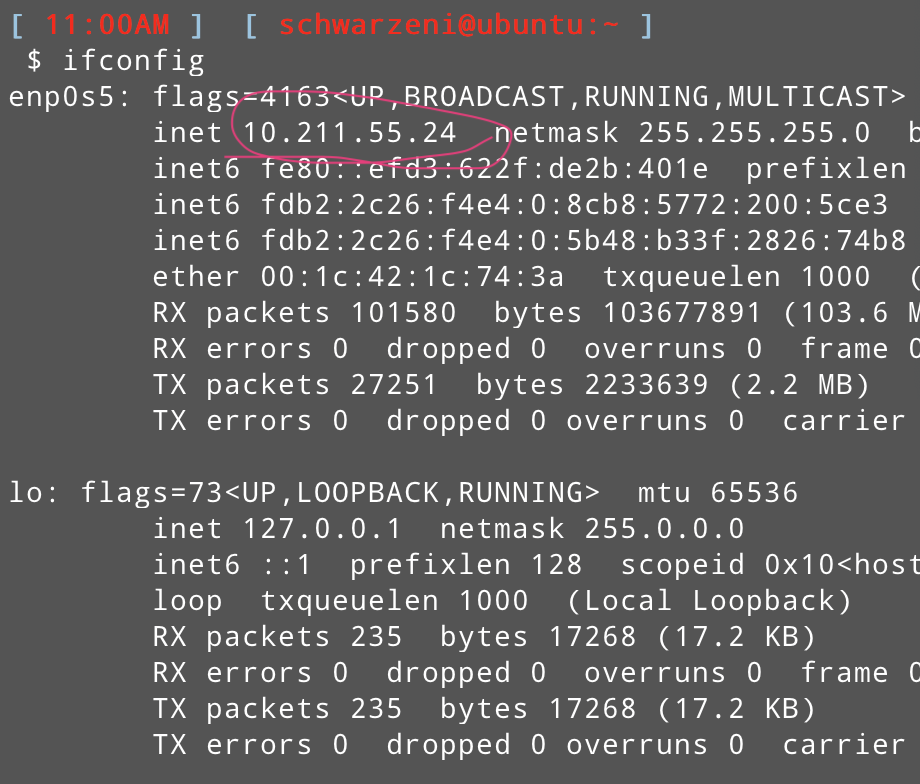

彻底告别图形界面！
环境
- MacOS v10.14
- Parallels Desktop v13.2
- Ubuntu v17.04
首先需要知道本机的ip地址，需要使用到ifconfig工具
1 | # 首先下载相应的工具包 |
应该就在前面几行就会有一个IP地址，我的是10.211.55.24

ok，现在就可以在本地终端通过ssh进行登录了
1 | # 用户名 IP地址 |
一个问题
如果碰到了如下的报错
1 | port 22: Connection refused |
解决方案如下
首先，这需要在虚拟机的终端内操作
输入如下命令即可
1 | sudo apt-get update |